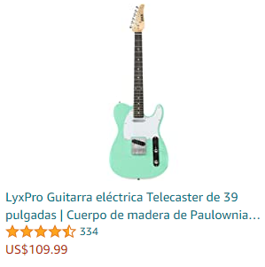
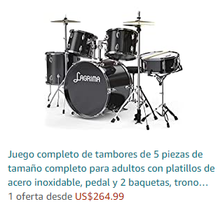
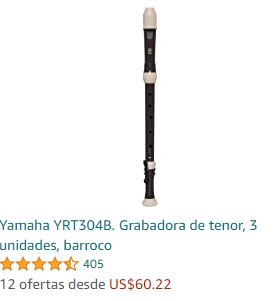
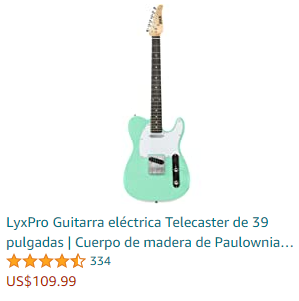
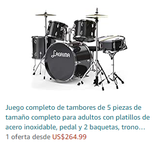
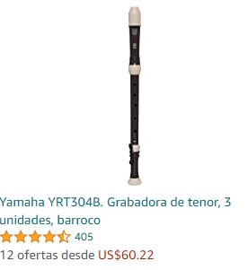

Productos en Oferta Ahora
  
  
Publicado el 24 de Julio de 2021
Los estudios demuestran que por la gran cantidad de esfuerzo y años que lleva dominar la técnica de un instrumento
se requiere aprender un lenguaje y un sistema de escritura nuevos,
coordinar con precisión un repertorio desconocido
de movimientos de las manos, sincronizarse con otras personas, etc.
Y cuando al fin se domina una pieza, siempre aparecen otras obras y técnicas que aprender
Los estudios con esta profesión muestran que una de las áreas del cerebro más implicadas en la navegación espacial
y la memoria (conocida como el hipocampo) está más desarrollada en músicos expertos.
Publicado el 24 de Julio de 2021
Hoy en día existe un gran número de aplicaciones destinadas a aquellos usuarios que se dedican a la música.
De hecho hay incluso apps que permiten crear música desde un teléfono. Pero también existen otras aplicaciones
para otros aspectos relacionados con la música y que sirven para afinar instrumentos, como guitarras, antes de emplearlas.
Guitar Tuna es muy precisa y rápida de utilizar. No solo permite afinar guitarras,
también ukeleles y bajos. Además, cuenta con juegos
y actividades para que los usuarios aprendan a tocar la guitarra. Está disponible para Android e iOS.
Con la app Tuner los usuarios pueden afinar prácticamente cualquier instrumento musical,
como el violín, la viola, violonchelo, contrabajo, guitarra, piano, instrumentos de viento e, incluso, la propia voz.